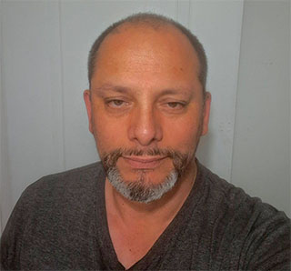

Carlos Castro
About Me
My name is Carlos Castro, I was born in Chile, I am married and I have three children. I have worked developing software and providing computer support for several years in the past. I like football, movies, history, and everything related to science, especially physics.
Chile is the one of the souther countries in the world. It is also very close to Antarctica. It has one of the driest deserts and some of the largest and most modern telescopes like Extremely Large Telescope (ELT), Very Large Telescope (VLT), Atacama Large Millimeter/submillimeter Array (ALMA) and the Vera C. Rubin Observatory.